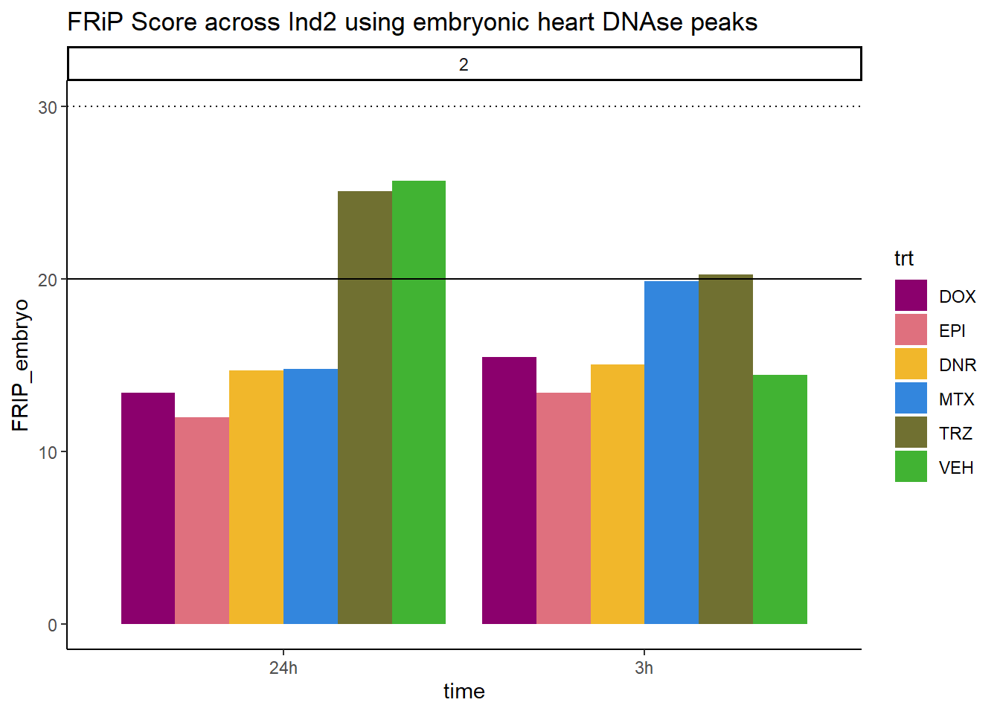

QC_on_reads
Renee Matthews
2025-05-04
Last updated: 2025-05-07
Checks: 7 0
Knit directory: ATAC_learning/
This reproducible R Markdown analysis was created with workflowr (version 1.7.1). The Checks tab describes the reproducibility checks that were applied when the results were created. The Past versions tab lists the development history.
Great! Since the R Markdown file has been committed to the Git repository, you know the exact version of the code that produced these results.
Great job! The global environment was empty. Objects defined in the global environment can affect the analysis in your R Markdown file in unknown ways. For reproduciblity it’s best to always run the code in an empty environment.
The command set.seed(20231016) was run prior to running
the code in the R Markdown file. Setting a seed ensures that any results
that rely on randomness, e.g. subsampling or permutations, are
reproducible.
Great job! Recording the operating system, R version, and package versions is critical for reproducibility.
Nice! There were no cached chunks for this analysis, so you can be confident that you successfully produced the results during this run.
Great job! Using relative paths to the files within your workflowr project makes it easier to run your code on other machines.
Great! You are using Git for version control. Tracking code development and connecting the code version to the results is critical for reproducibility.
The results in this page were generated with repository version 0c95219. See the Past versions tab to see a history of the changes made to the R Markdown and HTML files.
Note that you need to be careful to ensure that all relevant files for
the analysis have been committed to Git prior to generating the results
(you can use wflow_publish or
wflow_git_commit). workflowr only checks the R Markdown
file, but you know if there are other scripts or data files that it
depends on. Below is the status of the Git repository when the results
were generated:
Ignored files:
Ignored: .RData
Ignored: .Rhistory
Ignored: .Rproj.user/
Ignored: data/ACresp_SNP_table.csv
Ignored: data/ARR_SNP_table.csv
Ignored: data/All_merged_peaks.tsv
Ignored: data/CAD_gwas_dataframe.RDS
Ignored: data/CTX_SNP_table.csv
Ignored: data/Collapsed_expressed_NG_peak_table.csv
Ignored: data/DEG_toplist_sep_n45.RDS
Ignored: data/FRiP_first_run.txt
Ignored: data/Final_four_data/
Ignored: data/Frip_1_reads.csv
Ignored: data/Frip_2_reads.csv
Ignored: data/Frip_3_reads.csv
Ignored: data/Frip_4_reads.csv
Ignored: data/Frip_5_reads.csv
Ignored: data/Frip_6_reads.csv
Ignored: data/GO_KEGG_analysis/
Ignored: data/HF_SNP_table.csv
Ignored: data/Ind1_75DA24h_dedup_peaks.csv
Ignored: data/Ind1_TSS_peaks.RDS
Ignored: data/Ind1_firstfragment_files.txt
Ignored: data/Ind1_fragment_files.txt
Ignored: data/Ind1_peaks_list.RDS
Ignored: data/Ind1_summary.txt
Ignored: data/Ind2_TSS_peaks.RDS
Ignored: data/Ind2_fragment_files.txt
Ignored: data/Ind2_peaks_list.RDS
Ignored: data/Ind2_summary.txt
Ignored: data/Ind3_TSS_peaks.RDS
Ignored: data/Ind3_fragment_files.txt
Ignored: data/Ind3_peaks_list.RDS
Ignored: data/Ind3_summary.txt
Ignored: data/Ind4_79B24h_dedup_peaks.csv
Ignored: data/Ind4_TSS_peaks.RDS
Ignored: data/Ind4_V24h_fraglength.txt
Ignored: data/Ind4_fragment_files.txt
Ignored: data/Ind4_fragment_filesN.txt
Ignored: data/Ind4_peaks_list.RDS
Ignored: data/Ind4_summary.txt
Ignored: data/Ind5_TSS_peaks.RDS
Ignored: data/Ind5_fragment_files.txt
Ignored: data/Ind5_fragment_filesN.txt
Ignored: data/Ind5_peaks_list.RDS
Ignored: data/Ind5_summary.txt
Ignored: data/Ind6_TSS_peaks.RDS
Ignored: data/Ind6_fragment_files.txt
Ignored: data/Ind6_peaks_list.RDS
Ignored: data/Ind6_summary.txt
Ignored: data/Knowles_4.RDS
Ignored: data/Knowles_5.RDS
Ignored: data/Knowles_6.RDS
Ignored: data/LiSiLTDNRe_TE_df.RDS
Ignored: data/MI_gwas.RDS
Ignored: data/SNP_GWAS_PEAK_MRC_id
Ignored: data/SNP_GWAS_PEAK_MRC_id.csv
Ignored: data/SNP_gene_cat_list.tsv
Ignored: data/SNP_supp_schneider.RDS
Ignored: data/TE_info/
Ignored: data/TFmapnames.RDS
Ignored: data/all_TSSE_scores.RDS
Ignored: data/all_four_filtered_counts.txt
Ignored: data/aln_run1_results.txt
Ignored: data/anno_ind1_DA24h.RDS
Ignored: data/anno_ind4_V24h.RDS
Ignored: data/annotated_gwas_SNPS.csv
Ignored: data/background_n45_he_peaks.RDS
Ignored: data/cardiac_muscle_FRIP.csv
Ignored: data/cardiomyocyte_FRIP.csv
Ignored: data/col_ng_peak.csv
Ignored: data/cormotif_full_4_run.RDS
Ignored: data/cormotif_full_4_run_he.RDS
Ignored: data/cormotif_full_6_run.RDS
Ignored: data/cormotif_full_6_run_he.RDS
Ignored: data/cormotif_probability_45_list.csv
Ignored: data/cormotif_probability_45_list_he.csv
Ignored: data/cormotif_probability_all_6_list.csv
Ignored: data/cormotif_probability_all_6_list_he.csv
Ignored: data/datasave.RDS
Ignored: data/embryo_heart_FRIP.csv
Ignored: data/enhancer_list_ENCFF126UHK.bed
Ignored: data/enhancerdata/
Ignored: data/filt_Peaks_efit2.RDS
Ignored: data/filt_Peaks_efit2_bl.RDS
Ignored: data/filt_Peaks_efit2_n45.RDS
Ignored: data/first_Peaksummarycounts.csv
Ignored: data/first_run_frag_counts.txt
Ignored: data/full_bedfiles/
Ignored: data/gene_ref.csv
Ignored: data/gwas_1_dataframe.RDS
Ignored: data/gwas_2_dataframe.RDS
Ignored: data/gwas_3_dataframe.RDS
Ignored: data/gwas_4_dataframe.RDS
Ignored: data/gwas_5_dataframe.RDS
Ignored: data/high_conf_peak_counts.csv
Ignored: data/high_conf_peak_counts.txt
Ignored: data/high_conf_peaks_bl_counts.txt
Ignored: data/high_conf_peaks_counts.txt
Ignored: data/hits_files/
Ignored: data/hyper_files/
Ignored: data/hypo_files/
Ignored: data/ind1_DA24hpeaks.RDS
Ignored: data/ind1_TSSE.RDS
Ignored: data/ind2_TSSE.RDS
Ignored: data/ind3_TSSE.RDS
Ignored: data/ind4_TSSE.RDS
Ignored: data/ind4_V24hpeaks.RDS
Ignored: data/ind5_TSSE.RDS
Ignored: data/ind6_TSSE.RDS
Ignored: data/initial_complete_stats_run1.txt
Ignored: data/left_ventricle_FRIP.csv
Ignored: data/median_24_lfc.RDS
Ignored: data/median_3_lfc.RDS
Ignored: data/mergedPeads.gff
Ignored: data/mergedPeaks.gff
Ignored: data/motif_list_full
Ignored: data/motif_list_n45
Ignored: data/motif_list_n45.RDS
Ignored: data/multiqc_fastqc_run1.txt
Ignored: data/multiqc_fastqc_run2.txt
Ignored: data/multiqc_genestat_run1.txt
Ignored: data/multiqc_genestat_run2.txt
Ignored: data/my_hc_filt_counts.RDS
Ignored: data/my_hc_filt_counts_n45.RDS
Ignored: data/n45_bedfiles/
Ignored: data/n45_files
Ignored: data/other_papers/
Ignored: data/peakAnnoList_1.RDS
Ignored: data/peakAnnoList_2.RDS
Ignored: data/peakAnnoList_24_full.RDS
Ignored: data/peakAnnoList_24_n45.RDS
Ignored: data/peakAnnoList_3.RDS
Ignored: data/peakAnnoList_3_full.RDS
Ignored: data/peakAnnoList_3_n45.RDS
Ignored: data/peakAnnoList_4.RDS
Ignored: data/peakAnnoList_5.RDS
Ignored: data/peakAnnoList_6.RDS
Ignored: data/peakAnnoList_Eight.RDS
Ignored: data/peakAnnoList_full_motif.RDS
Ignored: data/peakAnnoList_n45_motif.RDS
Ignored: data/siglist_full.RDS
Ignored: data/siglist_n45.RDS
Ignored: data/summarized_peaks_dataframe.txt
Ignored: data/summary_peakIDandReHeat.csv
Ignored: data/test.list.RDS
Ignored: data/testnames.txt
Ignored: data/toplist_6.RDS
Ignored: data/toplist_full.RDS
Ignored: data/toplist_full_DAR_6.RDS
Ignored: data/toplist_n45.RDS
Ignored: data/trimmed_seq_length.csv
Ignored: data/unclassified_full_set_peaks.RDS
Ignored: data/unclassified_n45_set_peaks.RDS
Ignored: data/xstreme/
Untracked files:
Untracked: analysis/Diagnosis-tmm.Rmd
Untracked: analysis/Expressed_RNA_associations.Rmd
Untracked: analysis/LFC_corr.Rmd
Untracked: analysis/SVA.Rmd
Untracked: analysis/Tan2020.Rmd
Untracked: analysis/making_master_peaks_list.Rmd
Untracked: analysis/my_hc_filt_counts.csv
Untracked: code/IGV_snapshot_code.R
Untracked: code/LongDARlist.R
Untracked: code/just_for_Fun.R
Untracked: output/cormotif_probability_45_list.csv
Untracked: output/cormotif_probability_all_6_list.csv
Untracked: setup.RData
Unstaged changes:
Modified: ATAC_learning.Rproj
Modified: analysis/DEG_analysis.Rmd
Modified: analysis/Jaspar_motif.Rmd
Modified: analysis/Jaspar_motif_ff.Rmd
Modified: analysis/final_four_analysis.Rmd
Note that any generated files, e.g. HTML, png, CSS, etc., are not included in this status report because it is ok for generated content to have uncommitted changes.
These are the previous versions of the repository in which changes were
made to the R Markdown (analysis/QC_on_reads.Rmd) and HTML
(docs/QC_on_reads.html) files. If you’ve configured a
remote Git repository (see ?wflow_git_remote), click on the
hyperlinks in the table below to view the files as they were in that
past version.
| File | Version | Author | Date | Message |
|---|---|---|---|---|
| Rmd | 0c95219 | reneeisnowhere | 2025-05-07 | updates |
library(tidyverse)
library(kableExtra)
# library(broom)
library(RColorBrewer)
library(ChIPseeker)
library("TxDb.Hsapiens.UCSC.hg38.knownGene")
library("org.Hs.eg.db")
library(rtracklayer)
# library(edgeR)
library(ggfortify)
# library(limma)
library(readr)
library(BiocGenerics)
library(gridExtra)
library(VennDiagram)
library(scales)
library(BiocParallel)
library(ggpubr)
library(devtools)
library(eulerr)
# library(genomation)
library(ggsignif)
library(plyranges)
library(ggrepel)
library(ComplexHeatmap)
library(cowplot)
library(smplot2)
library(data.table)
library(ATACseqQC)drug_pal <- c("#8B006D","#DF707E","#F1B72B", "#3386DD","#707031","#41B333")Loading data
Ind1_summary <- read.csv("data/Ind1_summary.txt", row.names = 1) %>%
dplyr::rename("sample"=X1,"reads"=X2,"mapped"=X3)%>%
mutate(sample=gsub(pattern = "flagstat_first/trimmed_","total_",sample)) %>%
mutate(sample= gsub(pattern= "flagstat_noM/trimmed_","nuclear_",sample)) %>%
mutate(sample=gsub(pattern = "filt_files/trimmed_","other_",sample)) %>%
mutate(sample = gsub("24h","_24h",sample),
sample = gsub("3h","_3h",sample)) %>%
separate(sample, into=c("read_type","indv","trt","time",NA,"neat")) %>%
mutate(read_type=if_else(read_type=="other",neat,read_type)) %>%
mutate(trt= gsub('75DX','DOX',trt),
trt= gsub('75E','EPI', trt),
trt=gsub('75DA','DNR',trt),
trt=gsub('75M','MTX',trt),
trt=gsub('75T','TRZ',trt),
trt=gsub('75V','VEH',trt)) %>%
separate(reads,into=c("reads",NA),sep= " ") %>%
mutate(reads=as.numeric(reads)) %>%
separate(mapped, into= c("mapped_reads", NA,NA, "percent_mapped_reads",NA)) %>%
mutate(mapped_reads=as.numeric(mapped_reads)) %>%
tidyr::unite("sample",indv:time,sep = "_",remove = FALSE) %>%
dplyr::select(sample, indv:time, read_type,reads, mapped_reads)
Ind2_summary <- read.csv("data/Ind2_summary.txt", row.names = 1)%>%
dplyr::rename("sample"=X1,"reads"=X2,"mapped"=X3)%>%
mutate(sample=gsub(pattern = "flagstat_first/trimmed_","total_",sample)) %>%
mutate(sample= gsub(pattern= "flagstat_noM/trimmed_","nuclear_",sample)) %>%
mutate(sample=gsub(pattern = "filt_files/trimmed_","other_",sample)) %>%
mutate(sample = gsub("24h","_24h",sample),
sample = gsub("3h","_3h",sample)) %>%
separate(sample, into=c("read_type","indv","trt","time",NA,"neat")) %>%
mutate(read_type=if_else(read_type=="other",neat,read_type)) %>%
mutate(trt= gsub('87DX','DOX',trt),
trt= gsub('87E','EPI', trt),
trt=gsub('87DA','DNR',trt),
trt=gsub('87M','MTX',trt),
trt=gsub('87T','TRZ',trt),
trt=gsub('87V','VEH',trt)) %>%
separate(reads,into=c("reads",NA),sep= " ") %>%
mutate(reads=as.numeric(reads)) %>%
separate(mapped, into= c("mapped_reads", NA,NA, "percent_mapped_reads",NA)) %>%
mutate(mapped_reads=as.numeric(mapped_reads)) %>%
tidyr::unite("sample",indv:time,sep = "_",remove = FALSE) %>%
dplyr::select(sample, indv:time, read_type,reads, mapped_reads)
Ind3_summary <- read.csv("data/Ind3_summary.txt", row.names = 1)%>%
dplyr::rename("sample"=X1,"reads"=X2,"mapped"=X3)%>%
mutate(sample=gsub(pattern = "flagstat_first/trimmed_","total_",sample)) %>%
mutate(sample= gsub(pattern= "flagstat_noM/trimmed_","nuclear_",sample)) %>%
mutate(sample=gsub(pattern = "filt_files/trimmed_","other_",sample)) %>%
mutate(sample = gsub("24h","_24h",sample),
sample = gsub("3h","_3h",sample)) %>%
separate(sample, into=c("read_type","indv","trt","time",NA,"neat")) %>%
mutate(read_type=if_else(read_type=="other",neat,read_type)) %>%
mutate(trt= gsub('77DX','DOX',trt),
trt= gsub('77E','EPI', trt),
trt=gsub('77DA','DNR',trt),
trt=gsub('77M','MTX',trt),
trt=gsub('77T','TRZ',trt),
trt=gsub('77V','VEH',trt)) %>%
separate(reads,into=c("reads",NA),sep= " ") %>%
mutate(reads=as.numeric(reads)) %>%
separate(mapped, into= c("mapped_reads", NA,NA, "percent_mapped_reads",NA)) %>%
mutate(mapped_reads=as.numeric(mapped_reads)) %>%
tidyr::unite("sample",indv:time,sep = "_",remove = FALSE) %>%
dplyr::select(sample, indv:time, read_type,reads, mapped_reads)
Ind6_summary <- read.csv("data/Ind6_summary.txt", row.names = 1)%>%
dplyr::rename("sample"=X1,"reads"=X2,"mapped"=X3)%>%
mutate(sample=gsub(pattern = "flagstat_first/trimmed_","total_",sample)) %>%
mutate(sample= gsub(pattern= "flagstat_noM/trimmed_","nuclear_",sample)) %>%
mutate(sample=gsub(pattern = "filt_files/trimmed_","other_",sample)) %>%
mutate(sample = gsub("24h","_24h",sample),
sample = gsub("3h","_3h",sample)) %>%
separate(sample, into=c("read_type","indv","trt","time",NA,"neat")) %>%
mutate(read_type=if_else(read_type=="other",neat,read_type)) %>%
mutate(trt= gsub('71DX','DOX',trt),
trt= gsub('71E','EPI', trt),
trt=gsub('71DA','DNR',trt),
trt=gsub('71M','MTX',trt),
trt=gsub('71T','TRZ',trt),
trt=gsub('71V','VEH',trt)) %>%
separate(reads,into=c("reads",NA),sep= " ") %>%
mutate(reads=as.numeric(reads)) %>%
separate(mapped, into= c("mapped_reads", NA,NA, "percent_mapped_reads",NA)) %>%
mutate(mapped_reads=as.numeric(mapped_reads)) %>%
tidyr::unite("sample",indv:time,sep = "_",remove = FALSE) %>%
dplyr::select(sample, indv:time, read_type,reads, mapped_reads)
Final_four_counts <- Ind1_summary %>% rbind(Ind2_summary) %>% rbind(Ind3_summary) %>% rbind(Ind6_summary)
FF_bound <- Final_four_counts %>%
mutate(time=factor(time, levels =c("3h","24h"))) %>%
pivot_longer(cols = reads:mapped_reads, names_to="count_type", values_to = "read_num") %>%
mutate(read_type=case_when(read_type=="fin"~"unique",.default = read_type)) %>%
tidyr::unite("Total_reads",read_type:count_type,sep = "_", remove = TRUE) %>%
tidyr::unite("Total_reads_time",Total_reads:time,sep = "_", remove = FALSE) %>%
mutate(Total_reads=factor(Total_reads, levels = c("total_reads", "total_mapped_reads","nuclear_reads","nuclear_mapped_reads","unique_reads", "unique_mapped_reads", "nodup_reads", "nodup_mapped_reads"))) %>%
dplyr::filter(Total_reads != "nuclear_reads") %>%
dplyr::filter(Total_reads != "nodup_reads") %>%
dplyr::filter(Total_reads != "unique_reads") %>%
dplyr::mutate(trt=factor(trt, levels = c("DOX", "EPI","DNR", "MTX","TRZ","VEH")))FF_bound %>%
ggplot(., aes(x=Total_reads, y=read_num, col=indv, group=interaction(time,Total_reads_time)))+
geom_boxplot(aes(fill=trt)) +
geom_point(aes(col=indv))+
theme_bw()+
facet_wrap(~trt+time,nrow = 3, ncol = 6 )+
scale_fill_manual(values=drug_pal)+
theme(strip.text =
element_text(face = "bold",
hjust = 0,
size = 8),
strip.background =
element_rect(fill = "white",
linetype = "solid",
color = "black",
linewidth = 1),
panel.spacing = unit(1, 'points'),
axis.text.x=
element_text(angle = 90,
vjust = 0.5,
hjust=1))
Individual 1 fragment files:
Ind1_frag_files <- read.csv("data/Ind1_fragment_files.txt", row.names = 1)
Ind1_firstfrag_files <- read.csv("data/Ind1_firstfragment_files.txt", row.names = 1)
Ind1_frag_files %>%
mutate(trt=
factor(trt,levels=
c("DX","E","DA","M","T","V"),
labels=
c("DOX","EPI","DNR", "MTX","TRZ","VEH")))%>%
dplyr::filter(time =="3h") %>%
ggplot(., aes(y=counts, x=frag_size, group=trt))+
geom_line(aes(col=trt))+
ggtitle("Individual 1\n3 hour fragment sizes")+
theme_classic()+
facet_wrap(~trt)+
scale_color_manual(values=drug_pal)+
coord_cartesian(ylim=c(0,300000))Ind1_firstfrag_files %>%
mutate(trt=factor(trt,
levels=c("DX","E","DA","M","T","V"),
labels=c("DOX","EPI", "DNR","MTX","TRZ" ,"VEH"))) %>%
dplyr::filter(time =="3h") %>%
ggplot(., aes(y=(counts), x=(frag_size), group=trt))+
geom_line(aes(col=trt))+
ggtitle("Individual 1\n3 hour fragment sizes BEFORE filtering")+
theme_classic()+
facet_wrap(~trt)+
scale_color_manual(values=drug_pal)+
coord_cartesian(xlim=c(0,1000))
Ind1_frag_files %>%
mutate(trt=factor(trt, levels=c("DX","E","DA","M","T","V"), labels = c("DOX","EPI","DNR","MTX","TRZ","VEH"))) %>%
dplyr::filter(time =="24h") %>%
ggplot(., aes(y=(counts), x=frag_size, group=trt))+
geom_line(aes(col=trt))+
ggtitle("Individual 1\n24 hour fragment sizes")+
theme_classic()+
facet_wrap(~trt)+
scale_color_manual(values=drug_pal)Ind1_firstfrag_files %>%
mutate(trt=factor(trt, levels=c("DX","E","DA","M","T","V"), labels = c("DOX","EPI","DNR","MTX","TRZ","VEH"))) %>%
dplyr::filter(time =="24h") %>%
ggplot(., aes(y=(counts), x=(frag_size), group=trt))+
geom_line(aes(col=trt))+
ggtitle("Individual 1\n24 hour fragment sizes BEFORE filtering")+
theme_classic()+
facet_wrap(~trt)+
scale_color_manual(values=drug_pal)+
coord_cartesian(xlim=c(0,1000))#### FRiP Individual 1
cardiac_muscle_Frip <- read.csv("data/cardiac_muscle_FRIP.csv", row.names = 1)
cardiomyocyte_Frip <- read.csv("data/cardiomyocyte_FRIP.csv", row.names = 1)
left_ventricle_Frip <- read.csv("data/left_ventricle_FRIP.csv", row.names = 1)
embryo_heart_Frip <- read.csv("data/embryo_heart_FRIP.csv", row.names = 1)
Frip_1_reads <- read.csv("data/Frip_1_reads.csv", row.names = 1)
all_frip1 <- Frip_1_reads %>%
mutate(sample=gsub("75","1_",sample)) %>%
mutate(sample = gsub("24h","_24h",sample),
sample = gsub("3h","_3h",sample)) %>%
separate(sample, into = c("indv","trt","time")) %>%
mutate(trt=factor(trt, levels=c("DX","E","DA","M","T","V"), labels = c("DOX","EPI","DNR","MTX","TRZ","VEH"))) %>%
mutate(indv=as.numeric(indv)) %>%
left_join(., (cardiac_muscle_Frip %>% mutate(trt=factor(trt, levels=c("DOX","EPI","DNR","MTX","TRZ","VEH"))))) %>%
left_join(., (left_ventricle_Frip %>% mutate(trt=factor(trt, levels=c("DOX","EPI","DNR","MTX","TRZ","VEH"))))) %>%
left_join(., (cardiomyocyte_Frip %>% mutate(trt=factor(trt, levels=c("DOX","EPI","DNR","MTX","TRZ","VEH"))))) %>%
left_join(., (embryo_heart_Frip %>% mutate(trt=factor(trt, levels=c("DOX","EPI","DNR","MTX","TRZ","VEH"))))) %>%
mutate(FRIP_embryo=embryo_counts/dedup_reads *100) %>%
mutate(FRIP_cm=cm_counts/dedup_reads*100) %>%
mutate(FRIP_lv=lv_counts/dedup_reads*100) %>%
mutate(FRIP_adult=c_muscle_counts/dedup_reads*100)
Frip_1_reads %>%
mutate(sample=gsub("75","1_",sample)) %>%
mutate(sample = gsub("24h","_24h",sample),
sample = gsub("3h","_3h",sample)) %>%
separate(sample, into = c("indv","trt","time")) %>%
mutate(time=factor(time, levels = c("3h","24h"))) %>%
mutate(trt=factor(trt, levels=c("DX","E","DA","M","T","V"), labels = c("DOX","EPI","DNR","MTX","TRZ","VEH"))) %>%
ggplot(., aes (x=time, y=FRiP_1, group=trt))+
geom_col(position= "dodge",aes(fill=trt))+
geom_hline(yintercept = 20)+
geom_hline(yintercept = 30,linetype=3)+
facet_wrap(~indv)+
theme_classic()+
ggtitle("FRiP Score across each sample for individual 1")+
scale_fill_manual(values=drug_pal)
FRiP_first_run <- read.csv("data/FRiP_first_run.txt", row.names = 1)
FRiP_first_run %>%
mutate(sample=gsub("75","1_",sample)) %>%
mutate(sample=gsub("87","2_",sample)) %>%
mutate(sample=gsub("77","3_",sample)) %>%
mutate(sample=gsub("79","4_",sample)) %>%
mutate(sample=gsub("78","5_",sample)) %>%
mutate(sample=gsub("71","6_",sample)) %>%
mutate(sample = gsub("24h","_24h",sample),
sample = gsub("3h","_3h",sample)) %>%
separate(sample, into = c("indv","trt","time")) %>%
mutate(time=factor(time, levels = c("3h","24h"))) %>%
mutate(trt=factor(trt, levels=c("DX","E","DA","M","T","V"), labels = c("DOX","EPI","DNR","MTX","TRZ","VEH"))) %>%
ggplot(., aes (x=time, y=FRiP, group=trt))+
geom_col(position= "dodge",aes(fill=trt))+
geom_hline(yintercept = 20)+
geom_hline(yintercept = 30,linetype=3)+
facet_wrap(~indv)+
theme_classic()+
ggtitle("FRiP Score across Ind1 sample")+
scale_fill_manual(values=drug_pal)
all_frip1 %>% ggplot(., aes (x=time, y=FRIP_cm, group=trt))+
geom_col(position= "dodge",aes(fill=trt))+
geom_hline(yintercept = 20)+
geom_hline(yintercept = 30,linetype=3)+
facet_wrap(~indv)+
theme_classic()+
ggtitle("FRiP Score across Ind1 using cardiomyocyte DNAse peaks")+
scale_fill_manual(values=drug_pal)all_frip1 %>% ggplot(., aes (x=time, y=FRIP_lv, group=trt))+
geom_col(position= "dodge",aes(fill=trt))+
geom_hline(yintercept = 20)+
geom_hline(yintercept = 30,linetype=3)+
facet_wrap(~indv)+
theme_classic()+
ggtitle("FRiP Score across Ind1 using left ventricle DNAse peaks")+
scale_fill_manual(values=drug_pal)all_frip1 %>% ggplot(., aes (x=time, y=FRIP_adult, group=trt))+
geom_col(position= "dodge",aes(fill=trt))+
geom_hline(yintercept = 20)+
geom_hline(yintercept = 30,linetype=3)+
facet_wrap(~indv)+
theme_classic()+
ggtitle("FRiP Score across Ind1 using adult heart DNAse peaks")+
scale_fill_manual(values=drug_pal)all_frip1 %>% ggplot(., aes (x=time, y=FRIP_embryo, group=trt))+
geom_col(position= "dodge",aes(fill=trt))+
geom_hline(yintercept = 20)+
geom_hline(yintercept = 30,linetype=3)+
facet_wrap(~indv)+
theme_classic()+
ggtitle("FRiP Score across Ind1 using embryonic heart DNAse peaks")+
scale_fill_manual(values=drug_pal)Horizontal line is at 20%. Individual 4 at 3 hours is not a good score. Encode recommends >30% (dotted line).
Individual 2 fragment files:
Ind2_frag_files <- read.csv("data/Ind2_fragment_files.txt", row.names = 1)
Ind2_frag_files %>%
mutate(trt=factor(trt, levels=c("DX","E","DA","M","T","V"), labels = c("DOX","EPI","DNR","MTX","TRZ","VEH"))) %>%
dplyr::filter(time =="3h") %>%
ggplot(., aes(y=counts, x=frag_size, group=trt))+
# geom_line(aes(col=trt, alpha = 0.5, linewidth=1 ))+
geom_line(aes(col=trt))+
ggtitle("Individual 2\n3 hour fragment sizes")+
theme_classic()+
facet_wrap(~trt)+
scale_color_manual(values=drug_pal)
Ind2_frag_files %>%
mutate(trt=factor(trt, levels=c("DX","E","DA","M","T","V"), labels = c("DOX","EPI","DNR","MTX","TRZ","VEH"))) %>%
dplyr::filter(time =="24h") %>%
ggplot(., aes(y=counts, x=frag_size, group=trt))+
geom_line(aes(col=trt))+
ggtitle("Individual 2\n24 hour fragment sizes")+
theme_classic()+
facet_wrap(~trt)+
scale_color_manual(values=drug_pal)FRiP Individual 2
Frip_2_reads <- read.csv("data/Frip_2_reads.csv", row.names = 1)
all_frip2 <- Frip_2_reads %>%
mutate(sample=gsub("87","2_",sample)) %>%
mutate(sample = gsub("24h","_24h",sample),
sample = gsub("3h","_3h",sample)) %>%
separate(sample, into = c("indv","trt","time")) %>%
mutate(time=factor(time, levels = c("3h","24h"))) %>%
mutate(trt=factor(trt, levels=c("DX","E","DA","M","T","V"), labels = c("DOX","EPI","DNR","MTX","TRZ","VEH"))) %>%
mutate(indv=as.numeric(indv)) %>%
left_join(., (cardiac_muscle_Frip %>% mutate(trt=factor(trt, levels=c("DOX","EPI","DNR","MTX","TRZ","VEH"))))) %>%
left_join(., (left_ventricle_Frip %>% mutate(trt=factor(trt, levels=c("DOX","EPI","DNR","MTX","TRZ","VEH"))))) %>%
left_join(., (cardiomyocyte_Frip %>% mutate(trt=factor(trt, levels=c("DOX","EPI","DNR","MTX","TRZ","VEH"))))) %>%
left_join(., (embryo_heart_Frip %>% mutate(trt=factor(trt, levels=c("DOX","EPI","DNR","MTX","TRZ","VEH"))))) %>%
mutate(FRIP_embryo=embryo_counts/dedup_reads *100) %>%
mutate(FRIP_cm=cm_counts/dedup_reads*100) %>%
mutate(FRIP_lv=lv_counts/dedup_reads*100) %>%
mutate(FRIP_adult=c_muscle_counts/dedup_reads*100)
Frip_2_reads %>%
mutate(sample=gsub("87","2_",sample)) %>%
mutate(sample = gsub("24h","_24h",sample),
sample = gsub("3h","_3h",sample)) %>%
separate(sample, into = c("indv","trt","time")) %>%
mutate(time=factor(time, levels = c("3h","24h"))) %>%
mutate(trt=factor(trt, levels=c("DX","E","DA","M","T","V"), labels = c("DOX","EPI","DNR","MTX","TRZ","VEH"))) %>%
ggplot(., aes (x=time, y=FRiP_2, group=trt))+
geom_col(position= "dodge",aes(fill=trt))+
geom_hline(yintercept = 20)+
geom_hline(yintercept = 30,linetype=3)+
facet_wrap(~indv)+
theme_classic()+
ggtitle("FRiP Score across each sample for individual 2")+
scale_fill_manual(values=drug_pal)
all_frip2 %>% ggplot(., aes (x=time, y=FRIP_cm, group=trt))+
geom_col(position= "dodge",aes(fill=trt))+
geom_hline(yintercept = 20)+
geom_hline(yintercept = 30,linetype=3)+
facet_wrap(~indv)+
theme_classic()+
ggtitle("FRiP Score across Ind2 using cardiomyocyte DNAse peaks")+
scale_fill_manual(values=drug_pal)
all_frip2 %>% ggplot(., aes (x=time, y=FRIP_lv, group=trt))+
geom_col(position= "dodge",aes(fill=trt))+
geom_hline(yintercept = 20)+
geom_hline(yintercept = 30,linetype=3)+
facet_wrap(~indv)+
theme_classic()+
ggtitle("FRiP Score across Ind2 using left ventricle DNAse peaks")+
scale_fill_manual(values=drug_pal)
all_frip2 %>% ggplot(., aes (x=time, y=FRIP_adult, group=trt))+
geom_col(position= "dodge",aes(fill=trt))+
geom_hline(yintercept = 20)+
geom_hline(yintercept = 30,linetype=3)+
facet_wrap(~indv)+
theme_classic()+
ggtitle("FRiP Score across Ind2 using adult heart DNAse peaks")+
scale_fill_manual(values=drug_pal)
all_frip2 %>% ggplot(., aes (x=time, y=FRIP_embryo, group=trt))+
geom_col(position= "dodge",aes(fill=trt))+
geom_hline(yintercept = 20)+
geom_hline(yintercept = 30,linetype=3)+
facet_wrap(~indv)+
theme_classic()+
ggtitle("FRiP Score across Ind2 using embryonic heart DNAse peaks")+
scale_fill_manual(values=drug_pal)
Individual 3 fragment files:
Ind3_frag_files <- read.csv("data/Ind3_fragment_files.txt", row.names = 1)
Ind3_frag_files %>%
mutate(trt=factor(trt, levels=c("DX","E","DA","M","T","V"), labels = c("DOX","EPI","DNR","MTX","TRZ","VEH"))) %>%
dplyr::filter(time =="3h") %>%
ggplot(., aes(y=counts, x=frag_size, group=trt))+
# geom_line(aes(col=trt, alpha = 0.5, linewidth=1 ))+
geom_line(aes(col=trt))+
ggtitle("Individual 3\n3 hour fragment sizes")+
theme_classic()+
facet_wrap(~trt)+
scale_color_manual(values=drug_pal)Ind3_frag_files %>%
mutate(trt=factor(trt, levels=c("DX","E","DA","M","T","V"), labels = c("DOX","EPI","DNR","MTX","TRZ","VEH"))) %>%
dplyr::filter(time =="24h") %>%
ggplot(., aes(y=counts, x=frag_size, group=trt))+
geom_line(aes(col=trt))+
ggtitle("Individual 3\n24 hour fragment sizes")+
theme_classic()+
facet_wrap(~trt)+
scale_color_manual(values=drug_pal)
FRiP Individual 3
Frip_3_reads <- read.csv("data/Frip_3_reads.csv", row.names = 1)
all_frip3 <- Frip_3_reads %>%
mutate(sample=gsub("77","3_",sample)) %>%
mutate(sample = gsub("24h","_24h",sample),
sample = gsub("3h","_3h",sample)) %>%
separate(sample, into = c("indv","trt","time")) %>%
mutate(time=factor(time, levels = c("3h","24h"))) %>%
mutate(trt=factor(trt, levels=c("DX","E","DA","M","T","V"), labels = c("DOX","EPI","DNR","MTX","TRZ","VEH"))) %>%
mutate(indv=as.numeric(indv)) %>%
left_join(., (cardiac_muscle_Frip %>% mutate(trt=factor(trt, levels=c("DOX","EPI","DNR","MTX","TRZ","VEH"))))) %>%
left_join(., (left_ventricle_Frip %>% mutate(trt=factor(trt, levels=c("DOX","EPI","DNR","MTX","TRZ","VEH"))))) %>%
left_join(., (cardiomyocyte_Frip %>% mutate(trt=factor(trt, levels=c("DOX","EPI","DNR","MTX","TRZ","VEH"))))) %>%
left_join(., (embryo_heart_Frip %>% mutate(trt=factor(trt, levels=c("DOX","EPI","DNR","MTX","TRZ","VEH"))))) %>%
mutate(FRIP_embryo=embryo_counts/dedup_reads *100) %>%
mutate(FRIP_cm=cm_counts/dedup_reads*100) %>%
mutate(FRIP_lv=lv_counts/dedup_reads*100) %>%
mutate(FRIP_adult=c_muscle_counts/dedup_reads*100)
Frip_3_reads %>%
mutate(sample=gsub("77","3_",sample)) %>%
mutate(sample = gsub("24h","_24h",sample),
sample = gsub("3h","_3h",sample)) %>%
separate(sample, into = c("indv","trt","time")) %>%
mutate(time=factor(time, levels = c("3h","24h"))) %>%
mutate(trt=factor(trt, levels=c("DX","E","DA","M","T","V"), labels = c("DOX","EPI","DNR","MTX","TRZ","VEH"))) %>%
ggplot(., aes (x=time, y=FRiP_3, group=trt))+
geom_col(position= "dodge",aes(fill=trt))+
geom_hline(yintercept = 20)+
geom_hline(yintercept = 30,linetype=3)+
facet_wrap(~indv)+
theme_classic()+
ggtitle("FRiP Score across each sample for individual 3")+
scale_fill_manual(values=drug_pal)
all_frip3 %>% ggplot(., aes (x=time, y=FRIP_cm, group=trt))+
geom_col(position= "dodge",aes(fill=trt))+
geom_hline(yintercept = 20)+
geom_hline(yintercept = 30,linetype=3)+
facet_wrap(~indv)+
theme_classic()+
ggtitle("FRiP Score across Ind3 using cardiomyocyte DNAse peaks")+
scale_fill_manual(values=drug_pal)all_frip3 %>% ggplot(., aes (x=time, y=FRIP_lv, group=trt))+
geom_col(position= "dodge",aes(fill=trt))+
geom_hline(yintercept = 20)+
geom_hline(yintercept = 30,linetype=3)+
facet_wrap(~indv)+
theme_classic()+
ggtitle("FRiP Score across Ind3 using left ventricle DNAse peaks")+
scale_fill_manual(values=drug_pal)
all_frip3 %>% ggplot(., aes (x=time, y=FRIP_adult, group=trt))+
geom_col(position= "dodge",aes(fill=trt))+
geom_hline(yintercept = 20)+
geom_hline(yintercept = 30,linetype=3)+
facet_wrap(~indv)+
theme_classic()+
ggtitle("FRiP Score across Ind3 using adult heart DNAse peaks")+
scale_fill_manual(values=drug_pal)
all_frip3 %>% ggplot(., aes (x=time, y=FRIP_embryo, group=trt))+
geom_col(position= "dodge",aes(fill=trt))+
geom_hline(yintercept = 20)+
geom_hline(yintercept = 30,linetype=3)+
facet_wrap(~indv)+
theme_classic()+
ggtitle("FRiP Score across Ind3 using embryonic heart DNAse peaks")+
scale_fill_manual(values=drug_pal)### Individual 6 fragment files:
Ind6_frag_files <- read.csv("data/Ind6_fragment_files.txt", row.names = 1)
Ind6_frag_files %>%
dplyr::filter(time =="3h") %>%
mutate(trt=factor(trt, levels=c("DX","E","DA","M","T","V"), labels = c("DOX","EPI","DNR","MTX","TRZ","VEH"))) %>%
ggplot(., aes(y=counts, x=frag_size, group=trt))+
# geom_line(aes(col=trt, alpha = 0.5, linewidth=1 ))+
geom_line(aes(col=trt))+
ggtitle("Individual 6\n3 hour fragment sizes")+
theme_classic()+
facet_wrap(~trt)+
scale_color_manual(values=drug_pal)Ind6_frag_files %>%
dplyr::filter(time =="24h") %>%
mutate(trt=factor(trt, levels=c("DX","E","DA","M","T","V"), labels = c("DOX","EPI","DNR","MTX","TRZ","VEH"))) %>%
ggplot(., aes(y=counts, x=frag_size, group=trt))+
geom_line(aes(col=trt))+
ggtitle("Individual 6\n24 hour fragment sizes")+
theme_classic()+
facet_wrap(~trt)+
scale_color_manual(values=drug_pal) #### FRiP Individual 6
#### FRiP Individual 6
Frip_6_reads <- read.csv("data/Frip_6_reads.csv", row.names = 1)
all_frip6 <- Frip_6_reads %>%
mutate(sample=gsub("71","6_",sample)) %>%
mutate(sample = gsub("24h","_24h",sample),
sample = gsub("3h","_3h",sample)) %>%
separate(sample, into = c("indv","trt","time")) %>%
mutate(time=factor(time, levels = c("3h","24h"))) %>%
mutate(trt=factor(trt, levels=c("DX","E","DA","M","T","V"), labels = c("DOX","EPI","DNR","MTX","TRZ","VEH"))) %>%
mutate(indv=as.numeric(indv)) %>%
left_join(., (cardiac_muscle_Frip %>% mutate(trt=factor(trt, levels=c("DOX","EPI","DNR","MTX","TRZ","VEH"))))) %>%
left_join(., (left_ventricle_Frip %>% mutate(trt=factor(trt, levels=c("DOX","EPI","DNR","MTX","TRZ","VEH"))))) %>%
left_join(., (cardiomyocyte_Frip %>% mutate(trt=factor(trt, levels=c("DOX","EPI","DNR","MTX","TRZ","VEH"))))) %>%
left_join(., (embryo_heart_Frip %>% mutate(trt=factor(trt, levels=c("DOX","EPI","DNR","MTX","TRZ","VEH"))))) %>%
mutate(FRIP_embryo=embryo_counts/dedup_reads *100) %>%
mutate(FRIP_cm=cm_counts/dedup_reads*100) %>%
mutate(FRIP_lv=lv_counts/dedup_reads*100) %>%
mutate(FRIP_adult=c_muscle_counts/dedup_reads*100)
Frip_6_reads %>%
mutate(sample=gsub("71","6_",sample)) %>%
mutate(sample = gsub("24h","_24h",sample),
sample = gsub("3h","_3h",sample)) %>%
separate(sample, into = c("indv","trt","time")) %>%
mutate(time=factor(time, levels = c("3h","24h"))) %>%
mutate(trt=factor(trt, levels=c("DX","E","DA","M","T","V"), labels = c("DOX","EPI","DNR","MTX","TRZ","VEH"))) %>%
ggplot(., aes (x=time, y=FRiP_6, group=trt))+
geom_col(position= "dodge",aes(fill=trt))+
geom_hline(yintercept = 20)+
geom_hline(yintercept = 30,linetype=3)+
facet_wrap(~indv)+
theme_classic()+
ggtitle("FRiP Score across each sample for individual 6")+
scale_fill_manual(values=drug_pal)
all_frip6 %>% ggplot(., aes (x=time, y=FRIP_cm, group=trt))+
geom_col(position= "dodge",aes(fill=trt))+
geom_hline(yintercept = 20)+
geom_hline(yintercept = 30,linetype=3)+
facet_wrap(~indv)+
theme_classic()+
ggtitle("FRiP Score across Ind6 using cardiomyocyte DNAse peaks")+
scale_fill_manual(values=drug_pal)
all_frip6 %>% ggplot(., aes (x=time, y=FRIP_lv, group=trt))+
geom_col(position= "dodge",aes(fill=trt))+
geom_hline(yintercept = 20)+
geom_hline(yintercept = 30,linetype=3)+
facet_wrap(~indv)+
theme_classic()+
ggtitle("FRiP Score across Ind6 using left ventricle DNAse peaks")+
scale_fill_manual(values=drug_pal)
all_frip6 %>% ggplot(., aes (x=time, y=FRIP_adult, group=trt))+
geom_col(position= "dodge",aes(fill=trt))+
geom_hline(yintercept = 20)+
geom_hline(yintercept = 30,linetype=3)+
facet_wrap(~indv)+
theme_classic()+
ggtitle("FRiP Score across Ind6 using adult heart DNAse peaks")+
scale_fill_manual(values=drug_pal)
all_frip6 %>% ggplot(., aes (x=time, y=FRIP_embryo, group=trt))+
geom_col(position= "dodge",aes(fill=trt))+
geom_hline(yintercept = 20)+
geom_hline(yintercept = 30,linetype=3)+
facet_wrap(~indv)+
theme_classic()+
ggtitle("FRiP Score across Ind6 using embryonic heart DNAse peaks")+
scale_fill_manual(values=drug_pal)
Peaksummary <- read.csv("data/first_Peaksummarycounts.csv",row.names=1)
Peaksummary %>%
dplyr::filter(sample != "total") %>%
separate(sample, into=c(NA,"indv","sample",NA,NA,NA)) %>%
mutate(trt=gsub("[[:digit:]]", "",sample)) %>%
# mutate(trt=substr(trt,-1,2))
mutate(time = if_else(grepl("24h$", sample) ==TRUE, "24_hours","3_hours")) %>%
mutate(trt = case_match(trt,"DAh"~"DNR","DXh"~"DOX","Eh"~"EPI", "Mh" ~ "MTX", "Th" ~ "TRZ", "Vh" ~"VEH",.default = trt)) %>%
mutate(indv = factor(indv, levels = c("Ind1", "Ind2", "Ind3", "Ind4", "Ind5", "Ind6"))) %>%
mutate(time = factor(time, levels = c("3_hours", "24_hours"), labels= c("3 hours","24 hours"))) %>%
mutate(trt = factor(trt, levels = c("DOX","EPI", "DNR", "MTX", "TRZ", "VEH")))%>%
dplyr::filter(indv != "Ind4") %>%
dplyr::filter(indv != "Ind5") %>%
ggplot(., aes(x =trt, y=counts,group=trt))+
geom_boxplot(aes(fill= trt))+
geom_point(aes(col=indv, size =3))+
facet_wrap(~time)+
scale_fill_manual(values=drug_pal)+
scale_color_brewer(palette = "Dark2")+
ggtitle("Peak counts by treatment")+
theme_bw()Ind1 Peaks
Making the TSS average window code
# ind4_V24hpeaks_gr <- prepGRangeObj(ind4_V24hpeaks)
# ind1_DA24hpeaks_gr <- prepGRangeObj((ind1_DA24hpeaks))
# Epi_list <- GRangesList(ind1_DA24hpeaks_gr, ind4_V24hpeaks_gr)
# # ##plotting the TSS average window (making an overlap of each using Epi_list as list holder)
# Epi_list_tagMatrix = lapply(Epi_list, getTagMatrix, windows = TSS)
# plotAvgProf(Epi_list_tagMatrix, xlim=c(-3000, 3000), ylab = "Count Frequency")
#plotPeakProf(Epi_list_tagMatrix, facet = "none", conf = 0.95)
## What I did here: I called all my narrowpeak files
# peakfiles1 <- choose.files()
##these were practice for getting file names and shortening for the for loop below
# testname <- basename(peakfiles1[1])
# str_split_i(testname, "_",3)
##This loop first established a list then (because I already knew the list had 12 files)
## I then imported each of these onto that list. Once I had the list, I stored it as
## an R object,
# Ind1_peaks <- list()
# for (file in 1:12){
# testname <- basename(peakfiles1[file])
# banana_peel <- str_split_i(testname, "_",3)
# Ind1_peaks[[banana_peel]] <- readPeakFile(peakfiles1[file])
# }
# saveRDS(Ind1_peaks, "data/Ind1_peaks_list.RDS")
# I then called annotatePeak on that list object, and stored that as a R object for later retrieval.)
# peakAnnoList_1 <- lapply(Ind1_peaks, annotatePeak, tssRegion =c(-2000,2000), TxDb= txdb)
# saveRDS(peakAnnoList_1, "data/peakAnnoList_1.RDS")
peakAnnoList_1 <- readRDS("data/peakAnnoList_1.RDS")
plotAnnoBar(peakAnnoList_1, main = "Genomic Feature Distribution")
# saveRDS(Epi_list_tagMatrix, "data/Ind1_TSS_peaks.RDS")
Ind1_TSS_peaks_plot <- readRDS("data/Ind1_TSS_peaks.RDS")
# Epi_list_tagMatrix = lapply(Ind1_peaks, getTagMatrix, windows = TSS)
plotAvgProf(Ind1_TSS_peaks_plot[c(1,3,5,7,9,11)], xlim=c(-3000, 3000), ylab = "Count Frequency")+ ggtitle("3 hour Individual 1" )>> plotting figure... 2025-05-07 4:45:27 PM 
# + coord_cartesian(xlim = c(-100,500))
plotAvgProf(Ind1_TSS_peaks_plot[c(2,4,6,8,10,12)], xlim=c(-3000, 3000),ylab = "Count Frequency")+ ggtitle("24 hour Individual 1" )>> plotting figure... 2025-05-07 4:45:28 PM 
# + coord_cartesian(xlim = c(-100,500))Ind2 Peaks
## What I did here: I called all my narrowpeak files
# peakfiles2 <- choose.files()
##This loop first established a list then (because I already knew the list had 12 files)
## I then imported each of these onto that list. Once I had the list, I stored it as
## an R object,
# Ind2_peaks <- list()
# for (file in 1:12){
# testname <- basename(peakfiles2[file])
# banana_peel <- str_split_i(testname, "_",3)
# Ind2_peaks[[banana_peel]] <- readPeakFile(peakfiles2[file])
# }
# saveRDS(Ind2_peaks, "data/Ind2_peaks_list.RDS")
# I then called annotatePeak on that list object, and stored that as a R object for later retrieval.)
Ind2_peaks <- readRDS("data/Ind2_peaks_list.RDS")
# peakAnnoList_2 <- lapply(Ind2_peaks, annotatePeak, tssRegion =c(-2000,2000), TxDb= txdb)
# saveRDS(peakAnnoList_2, "data/peakAnnoList_2.RDS")
peakAnnoList_2 <- readRDS("data/peakAnnoList_2.RDS")
plotAnnoBar(peakAnnoList_2, main = "Genomic Feature Distribution, Individual 2")
# Epi_list_tagMatrix = lapply(Ind2_peaks, getTagMatrix, windows = TSS)
# saveRDS(Epi_list_tagMatrix, "data/Ind2_TSS_peaks.RDS")
Ind2_TSS_peaks_plot <- readRDS("data/Ind2_TSS_peaks.RDS")
plotAvgProf(Ind2_TSS_peaks_plot[c(1,3,5,7,9,11)], xlim=c(-3000, 3000), conf = 0.01, ylab = "Count Frequency")+ ggtitle("3 hour Individual 2" )>> plotting figure... 2025-05-07 4:45:43 PM
>> Running bootstrapping for tag matrix... 2025-05-07 4:49:05 PM
>> Running bootstrapping for tag matrix... 2025-05-07 4:52:19 PM
>> Running bootstrapping for tag matrix... 2025-05-07 4:55:36 PM
>> Running bootstrapping for tag matrix... 2025-05-07 4:59:13 PM
>> Running bootstrapping for tag matrix... 2025-05-07 5:02:37 PM
>> Running bootstrapping for tag matrix... 2025-05-07 5:05:50 PM 
# + coord_cartesian(xlim = c(-100,1000))
plotAvgProf(Ind2_TSS_peaks_plot[c(2,4,6,8,10,12)], xlim=c(-3000, 3000),ylab = "Count Frequency")+ ggtitle("24 hour Individual 2" )#+ coord_cartesian(xlim = c(-100,500))>> plotting figure... 2025-05-07 5:05:51 PM 
Ind3 Peaks
## What I did here: I called all my narrowpeak files
# peakfiles3 <- choose.files()
##This loop first established a list then (because I already knew the list had 12 files)
## I then imported each of these onto that list. Once I had the list, I stored it as
## an R object,
# Ind3_peaks <- list()
# for (file in 1:12){
# testname <- basename(peakfiles3[file])
# banana_peel <- str_split_i(testname, "_",3)
# Ind3_peaks[[banana_peel]] <- readPeakFile(peakfiles3[file])
# }
# saveRDS(Ind3_peaks, "data/Ind3_peaks_list.RDS")
# I then called annotatePeak on that list object, and stored that as a R object for later retrieval.)
Ind3_peaks <- readRDS("data/Ind3_peaks_list.RDS")
# peakAnnoList_3 <- lapply(Ind3_peaks, annotatePeak, tssRegion =c(-2000,2000), TxDb= txdb)
# saveRDS(peakAnnoList_3, "data/peakAnnoList_3.RDS")
peakAnnoList_3 <- readRDS("data/peakAnnoList_3.RDS")
plotAnnoBar(peakAnnoList_3, main = "Genomic Feature Distribution, Individual 3")
# Epi_list_tagMatrix = lapply(Ind3_peaks, getTagMatrix, windows = TSS)
# saveRDS(Epi_list_tagMatrix, "data/Ind3_TSS_peaks.RDS")
Ind3_TSS_peaks_plot <- readRDS("data/Ind3_TSS_peaks.RDS")
plotAvgProf(Ind3_TSS_peaks_plot[c(1,3,5,7,9,11)], xlim=c(-3000, 3000), ylab = "Count Frequency")+ ggtitle("3 hour Individual 3" )>> plotting figure... 2025-05-07 5:06:01 PM 
plotAvgProf(Ind3_TSS_peaks_plot[c(2,4,6,8,10,12)], xlim=c(-3000, 3000),ylab = "Count Frequency")+ ggtitle("24 hour Individual 3" )>> plotting figure... 2025-05-07 5:06:02 PM 
Ind6 Peaks
## What I did here: I called all my narrowpeak files
# peakfiles6 <- choose.files()
#
# ##This loop first established a list then (because I already knew the list had 12 files)
# ## I then imported each of these onto that list. Once I had the list, I stored it as
# ## an R object,
# Ind6_peaks <- list()
# for (file in 1:12){
# testname <- basename(peakfiles6[file])
# banana_peel <- str_split_i(testname, "_",3)
# Ind6_peaks[[banana_peel]] <- readPeakFile(peakfiles6[file])
# }
# saveRDS(Ind6_peaks, "data/Ind6_peaks_list.RDS")
# I then called annotatePeak on that list object, and stored that as a R object for later retrieval.)
Ind6_peaks <- readRDS("data/Ind6_peaks_list.RDS")
# peakAnnoList_6 <- lapply(Ind6_peaks, annotatePeak, tssRegion =c(-2000,2000), TxDb= txdb)
# saveRDS(peakAnnoList_6, "data/peakAnnoList_6.RDS")
peakAnnoList_6 <- readRDS("data/peakAnnoList_6.RDS")
plotAnnoBar(peakAnnoList_6, main = "Genomic Feature Distribution, Individual 6")+ggtitle ("Genomic Feature Distribution, Individual 6")
##Epi_list_tagMatrix title was just because I was too lazy to change the name
# Epi_list_tagMatrix = lapply(Ind6_peaks, getTagMatrix, windows = TSS)
# saveRDS(Epi_list_tagMatrix, "data/Ind6_TSS_peaks.RDS")
Ind6_TSS_peaks_plot <- readRDS("data/Ind6_TSS_peaks.RDS")
plotAvgProf(Ind6_TSS_peaks_plot[c(1,3,5,7,9,11)], xlim=c(-3000, 3000), ylab = "Count Frequency")+ ggtitle("3 hour Individual 6" )>> plotting figure... 2025-05-07 5:06:14 PM 
plotAvgProf(Ind6_TSS_peaks_plot[c(2,4,6,8,10,12)], xlim=c(-3000, 3000),ylab = "Count Frequency")+ ggtitle("24 hour Individual 6" )>> plotting figure... 2025-05-07 5:06:15 PM 
### for code to calculate the TSSE scores, reference the file "code/TSSE.R"### for code to calculate the TSSE scores, reference the file "code/TSSE.R"
allTSSE <- readRDS( "data/all_TSSE_scores.RDS")
allTSSE %>% as.data.frame() %>%
rownames_to_column("sample") %>%
separate(sample, into = c("indv","trt","time"), sep= "_") %>%
mutate(trt= factor(trt, levels = c("DOX","EPI","DNR","MTX","TRZ","VEH"))) %>%
mutate(time = factor(time, levels = c("3","24"),labels = c("3 hours","24 hours"))) %>%
dplyr::filter(indv !=4 &indv !=5) %>%
ggplot(., aes(x= time, y= V1, group = indv))+
geom_jitter(aes(col = trt, size = 1.5, alpha = 0.5) ,
position=position_jitter(0.25))+
geom_hline(yintercept=5, linetype = 3)+
geom_hline(yintercept=7, col = "blue")+
facet_wrap(~indv)+
theme_bw()+
ggtitle("TSS enrichment scores")+
scale_color_manual(values=drug_pal)+
theme(strip.text = element_text(face = "bold", hjust = .5, size = 8),
strip.background = element_rect(fill = "white", linetype = "solid",
color = "black", linewidth = 1))
#### These Ind1 TSS_peaks were created on the "analysis/Peak_calling.Rmd file example code:
# Import in peak files: peakfiles3 <- choose.files()
###This loop first established a list then (because I already knew the list had 12 files)
## I then imported each of these onto that list. Once I had the list, I stored it as
## an R object,
# Ind3_peaks <- list()
# for (file in 1:12){
# testname <- basename(peakfiles3[file])
# banana_peel <- str_split_i(testname, "_",3)
# Ind3_peaks[[banana_peel]] <- readPeakFile(peakfiles3[file])
# }
# saveRDS(Ind3_peaks, "data/Ind3_peaks_list.RDS")
#
# I then called annotatePeak on that list object, and stored that as a R object for later retrieval.)
# peakAnnoList_3 <- lapply(Ind3_peaks, annotatePeak, tssRegion =c(-2000,2000), TxDb= txdb)
# saveRDS(peakAnnoList_3, "data/peakAnnoList_3.RDS")
# Epi_list_tagMatrix = lapply(Ind3_peaks, getTagMatrix, windows = TSS)
# saveRDS(Epi_list_tagMatrix, "data/Ind3_TSS_peaks.RDS")
Ind1_TSS_peaks_plot <- readRDS("data/Ind1_TSS_peaks.RDS")
Ind2_TSS_peaks_plot <- readRDS("data/Ind2_TSS_peaks.RDS")
Ind3_TSS_peaks_plot <- readRDS("data/Ind3_TSS_peaks.RDS")
Ind6_TSS_peaks_plot <- readRDS("data/Ind6_TSS_peaks.RDS")
a1<- plotAvgProf(Ind1_TSS_peaks_plot[c(1,3,5,7,9,11)], xlim=c(-3000, 3000), ylab = "Count Frequency")+ ggtitle("3 hour Individual 1" )+coord_cartesian(xlim=c(-2000,2000))>> plotting figure... 2025-05-07 5:06:50 PM b1 <- plotAvgProf(Ind2_TSS_peaks_plot[c(1,3,5,7,9,11)], xlim=c(-3000, 3000), ylab = "Count Frequency")+ ggtitle("3 hour Individual 2" )+coord_cartesian(xlim=c(-2000,2000))>> plotting figure... 2025-05-07 5:06:51 PM c1 <- plotAvgProf(Ind3_TSS_peaks_plot[c(1,3,5,7,9,11)], xlim=c(-3000, 3000), ylab = "Count Frequency")+ ggtitle("3 hour Individual 3" )+coord_cartesian(xlim=c(-2000,2000))>> plotting figure... 2025-05-07 5:06:52 PM d1 <- plotAvgProf(Ind6_TSS_peaks_plot[c(1,3,5,7,9,11)], xlim=c(-3000, 3000), ylab = "Count Frequency")+ ggtitle("3 hour Individual 6" )+coord_cartesian(xlim=c(-2000,2000))>> plotting figure... 2025-05-07 5:06:53 PM a2 <- plotAvgProf(Ind1_TSS_peaks_plot[c(2,4,6,8,10,12)], xlim=c(-3000, 3000),ylab = "Count Frequency")+ ggtitle("24 hour Individual 1" )+coord_cartesian(xlim=c(-2000,2000))>> plotting figure... 2025-05-07 5:06:54 PM b2 <- plotAvgProf(Ind2_TSS_peaks_plot[c(2,4,6,8,10,12)], xlim=c(-3000, 3000),ylab = "Count Frequency")+ ggtitle("24 hour Individual 2" )+coord_cartesian(xlim=c(-2000,2000))>> plotting figure... 2025-05-07 5:06:55 PM c2 <- plotAvgProf(Ind3_TSS_peaks_plot[c(2,4,6,8,10,12)], xlim=c(-3000, 3000),ylab = "Count Frequency")+ ggtitle("24 hour Individual 3" )+coord_cartesian(xlim=c(-2000,2000))>> plotting figure... 2025-05-07 5:06:56 PM d2 <- plotAvgProf(Ind6_TSS_peaks_plot[c(2,4,6,8,10,12)], xlim=c(-3000, 3000),ylab = "Count Frequency")+ ggtitle("24 hour Individual 6" )+coord_cartesian(xlim=c(-2000,2000))>> plotting figure... 2025-05-07 5:06:57 PM plot_grid(a1,a2, b1,b2,c1,c2,d1,d2, axis="l",align = "hv",nrow=4, ncol=2)
Creating the masterlist of high confidence regions (masterpeaks)
To create this peak set, -First I moved all .narrowPeak files into
the same folder and ran
bedtools multiinter -i ./* >log.file.txt to create an
intersection of all peaks. I then was only interested in segments that
had a count of more than 4 (intersection existed in at least 4 of the
data sets) in all files. I filtered column #4 of the
log.file.txt output by
awk -F"\t" '$4 > 4 {print $1"\t"$2"\t"$3 }' log.file.txt > all_filt_peaks.bed
and printed the results of anything >4 in bed format to the
all_filt_peaks.bed file. Upon further reading of bedtools
documents, I realized the number of “peaks” was actually fragments of
peaks that were intersected among all files. This was not the final
output I wanted so I intersected these high counted segments back with
the very first initial mergedPeaks.bed file using
bedtools intersect -a mergedPeaks.bed -b all_filt_peaks.bed -wa -u > merged_filtered_peaks.bed.
using the -wa -u flags allowed me to filter the first
mergedPeaks file, keeping only those high confidence peaks that
overlapped the all_filt_peaks.bed and only reporting the
unique calls.
Additionally, I filtered out the blacklisted regions using the
following code:
intersectBed -v -a merged_filtered_peaks.bed -b Blacklist/hg38.blacklist.bed.gz > final_bl_filt_peaks.bed
My final high confidence peaks file contains 172,418 peaks. I used this
file to collect PE-read counts using
featureCounts -p -a high_conf_peaks.saf -F SAF -o all_four_filtered_counts.txt ind1/trimmed/filt_files/*nodup.bam ind2/trimmed/filt_files/*nodup.bam ind3/trimmed/filt_files/*nodup.bam ind6/trimmed/filt_files/*nodup.bam
sessionInfo()R version 4.4.2 (2024-10-31 ucrt)
Platform: x86_64-w64-mingw32/x64
Running under: Windows 11 x64 (build 26100)
Matrix products: default
locale:
[1] LC_COLLATE=English_United States.utf8
[2] LC_CTYPE=English_United States.utf8
[3] LC_MONETARY=English_United States.utf8
[4] LC_NUMERIC=C
[5] LC_TIME=English_United States.utf8
time zone: America/Chicago
tzcode source: internal
attached base packages:
[1] grid stats4 stats graphics grDevices utils datasets
[8] methods base
other attached packages:
[1] ATACseqQC_1.30.0
[2] data.table_1.17.0
[3] smplot2_0.2.5
[4] cowplot_1.1.3
[5] ComplexHeatmap_2.22.0
[6] ggrepel_0.9.6
[7] plyranges_1.26.0
[8] ggsignif_0.6.4
[9] eulerr_7.0.2
[10] devtools_2.4.5
[11] usethis_3.1.0
[12] ggpubr_0.6.0
[13] BiocParallel_1.40.0
[14] scales_1.3.0
[15] VennDiagram_1.7.3
[16] futile.logger_1.4.3
[17] gridExtra_2.3
[18] ggfortify_0.4.17
[19] rtracklayer_1.66.0
[20] org.Hs.eg.db_3.20.0
[21] TxDb.Hsapiens.UCSC.hg38.knownGene_3.20.0
[22] GenomicFeatures_1.58.0
[23] AnnotationDbi_1.68.0
[24] Biobase_2.66.0
[25] GenomicRanges_1.58.0
[26] GenomeInfoDb_1.42.3
[27] IRanges_2.40.1
[28] S4Vectors_0.44.0
[29] BiocGenerics_0.52.0
[30] ChIPseeker_1.42.1
[31] RColorBrewer_1.1-3
[32] kableExtra_1.4.0
[33] lubridate_1.9.4
[34] forcats_1.0.0
[35] stringr_1.5.1
[36] dplyr_1.1.4
[37] purrr_1.0.4
[38] readr_2.1.5
[39] tidyr_1.3.1
[40] tibble_3.2.1
[41] ggplot2_3.5.1
[42] tidyverse_2.0.0
[43] workflowr_1.7.1
loaded via a namespace (and not attached):
[1] R.methodsS3_1.8.2
[2] progress_1.2.3
[3] urlchecker_1.0.1
[4] poweRlaw_1.0.0
[5] nnet_7.3-20
[6] Biostrings_2.74.1
[7] HDF5Array_1.34.0
[8] vctrs_0.6.5
[9] ggtangle_0.0.6
[10] ChIPpeakAnno_3.40.0
[11] digest_0.6.37
[12] png_0.1-8
[13] shape_1.4.6.1
[14] git2r_0.35.0
[15] MASS_7.3-65
[16] reshape2_1.4.4
[17] httpuv_1.6.15
[18] foreach_1.5.2
[19] qvalue_2.38.0
[20] withr_3.0.2
[21] xfun_0.51
[22] ggfun_0.1.8
[23] ellipsis_0.3.2
[24] survival_3.8-3
[25] memoise_2.0.1
[26] profvis_0.4.0
[27] systemfonts_1.2.1
[28] tidytree_0.4.6
[29] zoo_1.8-13
[30] GlobalOptions_0.1.2
[31] gtools_3.9.5
[32] R.oo_1.27.0
[33] Formula_1.2-5
[34] prettyunits_1.2.0
[35] KEGGREST_1.46.0
[36] promises_1.3.2
[37] httr_1.4.7
[38] rstatix_0.7.2
[39] restfulr_0.0.15
[40] rhdf5filters_1.18.1
[41] ps_1.9.0
[42] rhdf5_2.50.2
[43] rstudioapi_0.17.1
[44] UCSC.utils_1.2.0
[45] miniUI_0.1.1.1
[46] generics_0.1.3
[47] DOSE_4.0.0
[48] base64enc_0.1-3
[49] processx_3.8.6
[50] curl_6.2.1
[51] zlibbioc_1.52.0
[52] randomForest_4.7-1.2
[53] GenomeInfoDbData_1.2.13
[54] SparseArray_1.6.2
[55] RBGL_1.82.0
[56] ade4_1.7-23
[57] xtable_1.8-4
[58] doParallel_1.0.17
[59] evaluate_1.0.3
[60] S4Arrays_1.6.0
[61] BiocFileCache_2.14.0
[62] hms_1.1.3
[63] colorspace_2.1-1
[64] filelock_1.0.3
[65] polynom_1.4-1
[66] magrittr_2.0.3
[67] later_1.4.1
[68] ggtree_3.14.0
[69] lattice_0.22-6
[70] getPass_0.2-4
[71] XML_3.99-0.18
[72] matrixStats_1.5.0
[73] Hmisc_5.2-2
[74] pillar_1.10.1
[75] nlme_3.1-167
[76] iterators_1.0.14
[77] pwalign_1.2.0
[78] caTools_1.18.3
[79] compiler_4.4.2
[80] stringi_1.8.4
[81] SummarizedExperiment_1.36.0
[82] GenomicAlignments_1.42.0
[83] plyr_1.8.9
[84] crayon_1.5.3
[85] abind_1.4-8
[86] BiocIO_1.16.0
[87] gridGraphics_0.5-1
[88] locfit_1.5-9.12
[89] bit_4.6.0
[90] fastmatch_1.1-6
[91] whisker_0.4.1
[92] codetools_0.2-20
[93] bslib_0.9.0
[94] TxDb.Hsapiens.UCSC.hg19.knownGene_3.2.2
[95] GetoptLong_1.0.5
[96] multtest_2.62.0
[97] mime_0.12
[98] splines_4.4.2
[99] circlize_0.4.16
[100] Rcpp_1.0.14
[101] dbplyr_2.5.0
[102] knitr_1.49
[103] blob_1.2.4
[104] seqLogo_1.72.0
[105] BiocVersion_3.20.0
[106] clue_0.3-66
[107] AnnotationFilter_1.30.0
[108] fs_1.6.5
[109] checkmate_2.3.2
[110] pkgbuild_1.4.6
[111] ggplotify_0.1.2
[112] Matrix_1.7-3
[113] callr_3.7.6
[114] statmod_1.5.0
[115] tzdb_0.4.0
[116] svglite_2.1.3
[117] pkgconfig_2.0.3
[118] tools_4.4.2
[119] cachem_1.1.0
[120] RSQLite_2.3.9
[121] viridisLite_0.4.2
[122] DBI_1.2.3
[123] fastmap_1.2.0
[124] rmarkdown_2.29
[125] Rsamtools_2.22.0
[126] AnnotationHub_3.14.0
[127] broom_1.0.7
[128] sass_0.4.9
[129] patchwork_1.3.0
[130] BiocManager_1.30.25
[131] graph_1.84.1
[132] carData_3.0-5
[133] rpart_4.1.24
[134] farver_2.1.2
[135] yaml_2.3.10
[136] MatrixGenerics_1.18.1
[137] foreign_0.8-88
[138] cli_3.6.4
[139] lifecycle_1.0.4
[140] lambda.r_1.2.4
[141] sessioninfo_1.2.3
[142] backports_1.5.0
[143] annotate_1.84.0
[144] timechange_0.3.0
[145] gtable_0.3.6
[146] rjson_0.2.23
[147] parallel_4.4.2
[148] ape_5.8-1
[149] limma_3.62.2
[150] jsonlite_1.9.1
[151] edgeR_4.4.2
[152] TFBSTools_1.44.0
[153] bitops_1.0-9
[154] bit64_4.6.0-1
[155] pwr_1.3-0
[156] yulab.utils_0.2.0
[157] CNEr_1.42.0
[158] futile.options_1.0.1
[159] jquerylib_0.1.4
[160] GOSemSim_2.32.0
[161] R.utils_2.13.0
[162] lazyeval_0.2.2
[163] shiny_1.10.0
[164] htmltools_0.5.8.1
[165] enrichplot_1.26.6
[166] GO.db_3.20.0
[167] rappdirs_0.3.3
[168] formatR_1.14
[169] ensembldb_2.30.0
[170] glue_1.8.0
[171] TFMPvalue_0.0.9
[172] GenomicScores_2.18.1
[173] httr2_1.1.1
[174] XVector_0.46.0
[175] RCurl_1.98-1.16
[176] InteractionSet_1.34.0
[177] rprojroot_2.0.4
[178] treeio_1.30.0
[179] BSgenome_1.74.0
[180] motifStack_1.50.0
[181] boot_1.3-31
[182] preseqR_4.0.0
[183] universalmotif_1.24.2
[184] igraph_2.1.4
[185] R6_2.6.1
[186] gplots_3.2.0
[187] labeling_0.4.3
[188] cluster_2.1.8.1
[189] pkgload_1.4.0
[190] Rhdf5lib_1.28.0
[191] regioneR_1.38.0
[192] aplot_0.2.5
[193] DirichletMultinomial_1.48.0
[194] DelayedArray_0.32.0
[195] tidyselect_1.2.1
[196] plotrix_3.8-4
[197] ProtGenerics_1.38.0
[198] htmlTable_2.4.3
[199] xml2_1.3.7
[200] car_3.1-3
[201] munsell_0.5.1
[202] KernSmooth_2.23-26
[203] htmlwidgets_1.6.4
[204] fgsea_1.32.2
[205] biomaRt_2.62.1
[206] rlang_1.1.5
[207] remotes_2.5.0